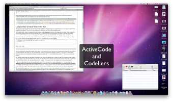

Esse material foi escrito com o objetivo de organizar o estudo para alunos da disciplina Introdução à Computação em Python.
O objetivo central de Introdução à Computação é desenvolver um raciocínio aplicado na formulação e resolução de problemas computacionais.
Ferramentas tais como funções nativas e módulos existentes no Python evitam que reinventemos soluções disponíveis e façamos tarefas presumidamente desnecessárias. O domínio dessas ferramentas é fundamental para um programador efetivo. Apesar disso, esta disciplina utiliza um subconjunto bem limitado dos recursos de Python. Não por esses recursos não serem importantes, mas simplesmente porque eles não são o foco em uma disciplina cujo objetivo é devenvolver um raciocínio aplicado na formulação e resolução de problemas computacionais.
O andamento da disciplina é orientado pelos problemas propostos. Cada problema introduz novos desafios que, para serem transpostos, nos levam a novas ideias e práticas de programação.
No que diz respeito à programação em Python, veremos:
- funções de entrada e saída: input() e print();
- tipos nativos de variáveis: int, float, str, e bool;
- funções de conversão de tipos: int() e float() ;
- operadores aritméticos: +, -, *, /, //, %,...;
- operadores relacionais: <, >, <=, >=, == e !=;
- operadores lógicos ou booleanos: and, or e not;
- expressões aritméticas, relacionais e lógicas;
- execução condicional, alternativa e em cadeia: if, if-else, if-elif-else;
- comando de repetição: while;
- indicadores de passagem (flags);
- funções;
- listas;
- strings; e
- objetos.
A bibliografia básica desta disciplina são estas notas de aula, além do livro Como Pensar como um Cientísta da Computação - Aprendendo com Python: Edição interativa que é uma tradução do livro How to Think Like a Computer Scientist - Learning with Python: Interactive Edition.
Para que estas notas de aula sejam melhor aproveitadas recomenda-se que seja lida a seção Formas especiais para rodar Python nesse livro do livro Como Pensar como um Cientísta da Computação - Aprendendo com Python: Edição interativa
Além dos exercícios do livro Como Pensar como um Cientísta da Computação - Aprendendo com Python: Edição interativa uma lista de exercícios está disponível em lista de exercícios.